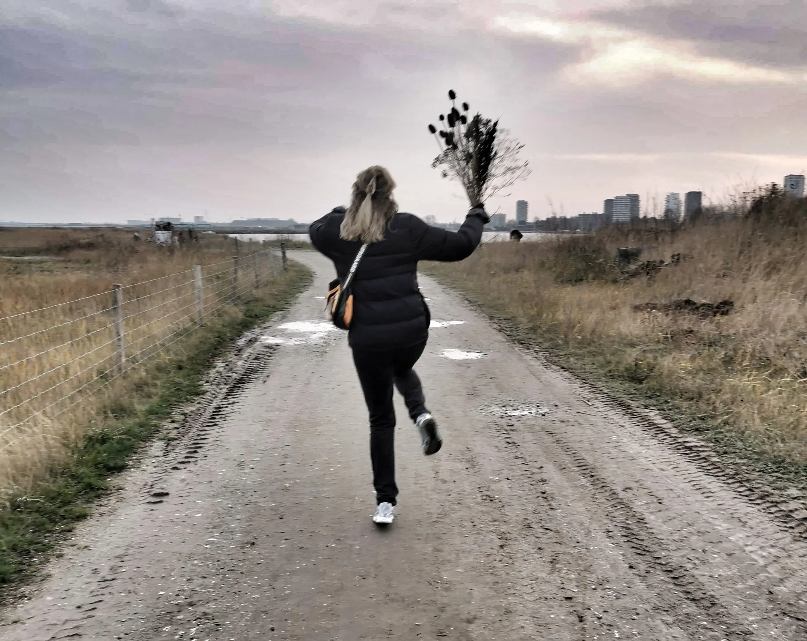
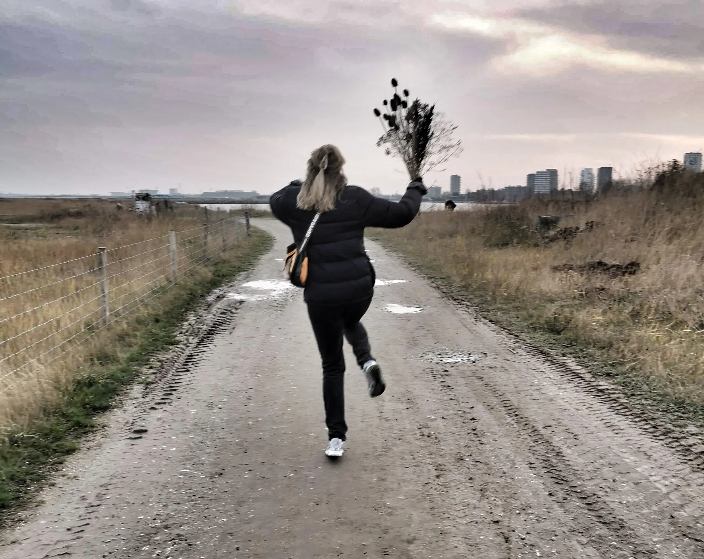

HVEM ER JEG?
Mit navn er Vibe Grith Mobeck, jeg er 34 år og bor til dagligt på Frederiksberg med min kæreste.
Jeg er uddannet pædagog og har arbejdet med pædagogik i mange år. Dog har jeg altid haft en drøm om at gå i en mere kreativ retning. Jeg besluttede derfor ret sponntant at søge ind på MMD, da der var pladser tilbage. Samme dag fik jeg besked på at jeg var optaget og startede en uge efter.
Det har været et ret vildt forløb og langt uden for min comfortzone, jeg er dog ikke i tvivl om at jeg har gjort det rigtige. Da jeg elsker studiet og har ikke fortrudt et sekund!
BAGGRUND
Som nævnt er jeg uddannet pædagog i 2013 fra Frøbel seminariet og har siden jeg flyttede til København i 2008 arbejdet med børn og unge indenfor Fritidsklub regi.
Det har givet mig rigtig meget at arbejde som pædagog, og har lært utrolig meget om andre og især
også om mig selv.
Min store kreative interesse har været en stor del af min pædagogiske praksis, og jeg har primært befundet mig i kreative værksteder med maling på tøjet og ler under neglene
Jeg har udover min faglige baggrund som pædagog også en meget stor interesse for det kreative,
det er her jeg slapper af og kobler af i mit hoved.
Jeg har altid gang i sjove kreative projekter, om det er på min symaskine, med papmache mellem
hænderne eller med skrue og søm, fordi der skal hænges billeder op derhjemme,
så har jeg altid tusind ideer og de skal prøves af.
CV
Personlige stikord: Nysgerrig, fantasifuld, kreativ, empatisk
Fun fact:
- Har (næsten) taget grundforløbet som møbelsnedker.
- Jeg kan sætte et stilads op
- Jeg har gået på keramik kursus af flere omgange og lært dreje.
- Jeg kan sy mit eget tøj.
- Jeg har ingen tidligere erfaring med kodning eller Adobe pakken.
Multimediedesigner skills (BERT)
 
